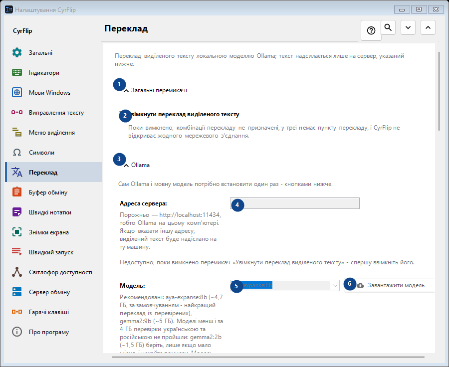
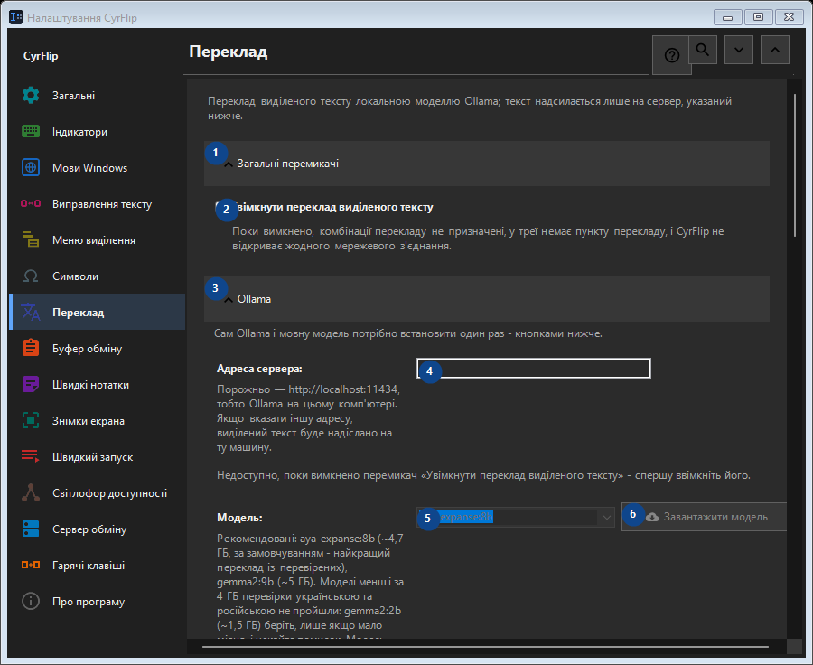

Переклад
Для чого це вікно
Переклад виділеного тексту локальною моделлю Ollama; текст надсилається лише на сервер, указаний нижче.


Порядок дій
Налаштування застосовуються одразу. Обов’язкового порядку немає; користуйтеся групами нижче.
Елементи
1. Загальні перемикачі
Скористайтеся командою, коли потрібна вказана дія. Прочитайте запит підтвердження перед згодою.
Ваші сполучення клавіш2. Увімкнути переклад виділеного тексту
Поки вимкнено, комбінації перекладу не призначені, у треї немає пункту перекладу, і CyrFlip не відкриває жодного мережевого з'єднання.
Ваші сполучення клавіш3. Ollama
Скористайтеся командою, коли потрібна вказана дія. Прочитайте запит підтвердження перед згодою.
Ваші сполучення клавіш4. Адреса сервера
Недоступно, поки вимкнено перемикач «Увімкнути переклад виділеного тексту» - спершу ввімкніть його. Елемент зараз недоступний. Спочатку ввімкніть функцію або виберіть запис.
Ваші сполучення клавіш5. Модель
Недоступно, поки вимкнено перемикач «Увімкнути переклад виділеного тексту» - спершу ввімкніть його. Елемент зараз недоступний. Спочатку ввімкніть функцію або виберіть запис.
Ваші сполучення клавіш6. Завантажити модель - Модель
Недоступно, поки вимкнено перемикач «Увімкнути переклад виділеного тексту» - спершу ввімкніть його. Елемент зараз недоступний. Спочатку ввімкніть функцію або виберіть запис.
Ваші сполучення клавіш7. Встановити Ollama
Недоступно, поки вимкнено перемикач «Увімкнути переклад виділеного тексту» - спершу ввімкніть його. Елемент зараз недоступний. Спочатку ввімкніть функцію або виберіть запис.
Ваші сполучення клавіш8. Запустити Ollama
Недоступно, поки вимкнено перемикач «Увімкнути переклад виділеного тексту» - спершу ввімкніть його. Елемент зараз недоступний. Спочатку ввімкніть функцію або виберіть запис.
Ваші сполучення клавіш9. Перевірити зв'язок
Недоступно, поки вимкнено перемикач «Увімкнути переклад виділеного тексту» - спершу ввімкніть його. Елемент зараз недоступний. Спочатку ввімкніть функцію або виберіть запис.
Ваші сполучення клавіш10. Скасувати
Скористайтеся командою, коли потрібна вказана дія. Прочитайте запит підтвердження перед згодою. Елемент зараз недоступний. Спочатку ввімкніть функцію або виберіть запис.
Ваші сполучення клавіш11. Запускати Ollama автоматично під час перекладу
Недоступно, поки вимкнено перемикач «Увімкнути переклад виділеного тексту» - спершу ввімкніть його. Елемент зараз недоступний. Спочатку ввімкніть функцію або виберіть запис.
Ваші сполучення клавіш12. Тримати модель у пам'яті (хв)
Недоступно, поки вимкнено перемикач «Увімкнути переклад виділеного тексту» - спершу ввімкніть його. Елемент зараз недоступний. Спочатку ввімкніть функцію або виберіть запис.
Ваші сполучення клавіш13. Сам Ollama і мовну модель потрібно встановити один раз - кнопками нижче.
Виберіть або введіть значення для сусіднього підпису. Перевірте його перед продовженням. Елемент зараз недоступний. Спочатку ввімкніть функцію або виберіть запис.
Ваші сполучення клавіш14. Чекати завантаження моделі не довше (с)
Недоступно, поки вимкнено перемикач «Увімкнути переклад виділеного тексту» - спершу ввімкніть його. Елемент зараз недоступний. Спочатку ввімкніть функцію або виберіть запис.
Ваші сполучення клавіш15. Сам Ollama і мовну модель потрібно встановити один раз - кнопками нижче.
Виберіть або введіть значення для сусіднього підпису. Перевірте його перед продовженням. Елемент зараз недоступний. Спочатку ввімкніть функцію або виберіть запис.
Ваші сполучення клавіш16. Напрямки перекладу
Скористайтеся командою, коли потрібна вказана дія. Прочитайте запит підтвердження перед згодою.
Ваші сполучення клавіш17. Додати напрямок...
Недоступно, поки вимкнено перемикач «Увімкнути переклад виділеного тексту» - спершу ввімкніть його. Елемент зараз недоступний. Спочатку ввімкніть функцію або виберіть запис.
Ваші сполучення клавіш18. Результат
Скористайтеся командою, коли потрібна вказана дія. Прочитайте запит підтвердження перед згодою.
Ваші сполучення клавіш19. Класти переклад у буфер обміну
Недоступно, поки вимкнено перемикач «Увімкнути переклад виділеного тексту» - спершу ввімкніть його. Елемент зараз недоступний. Спочатку ввімкніть функцію або виберіть запис.
Ваші сполучення клавіш20. Одразу вставляти переклад замість виділення
Недоступно, поки вимкнено перемикач «Увімкнути переклад виділеного тексту» - спершу ввімкніть його. Елемент зараз недоступний. Спочатку ввімкніть функцію або виберіть запис.
Ваші сполучення клавіш21. Показувати вихідний текст поряд із перекладом
Недоступно, поки вимкнено перемикач «Увімкнути переклад виділеного тексту» - спершу ввімкніть його. Елемент зараз недоступний. Спочатку ввімкніть функцію або виберіть запис.
Ваші сполучення клавіш22. Закривати вікно через (с)
Недоступно, поки вимкнено перемикач «Увімкнути переклад виділеного тексту» - спершу ввімкніть його. Елемент зараз недоступний. Спочатку ввімкніть функцію або виберіть запис.
Ваші сполучення клавіш23. Недоступно, поки вимкнено перемикач «Увімкнути переклад виділеного тексту» - спершу ввімкніть його.
Виберіть або введіть значення для сусіднього підпису. Перевірте його перед продовженням. Елемент зараз недоступний. Спочатку ввімкніть функцію або виберіть запис.
Ваші сполучення клавіш